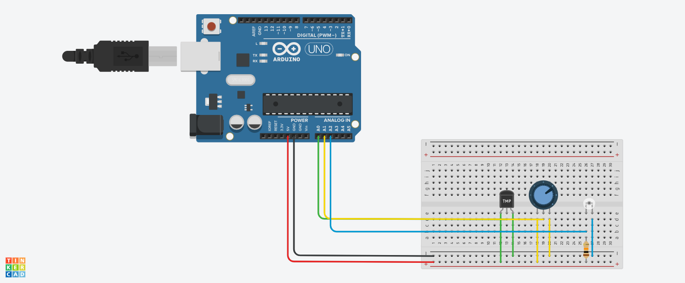
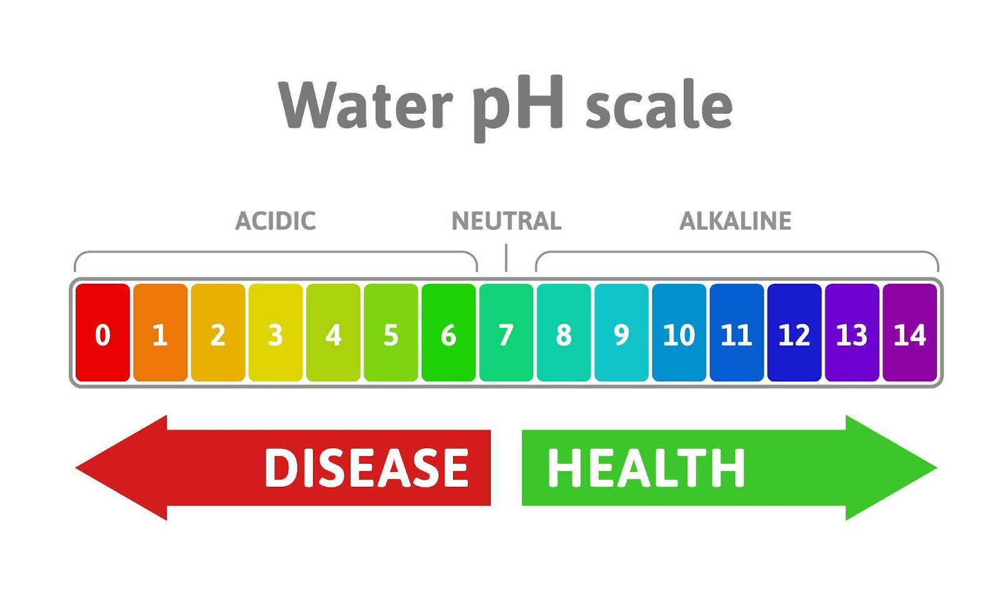
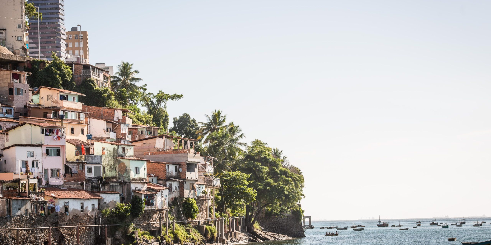
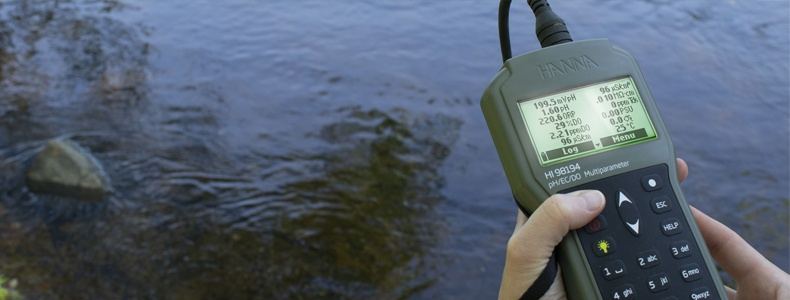
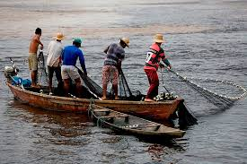
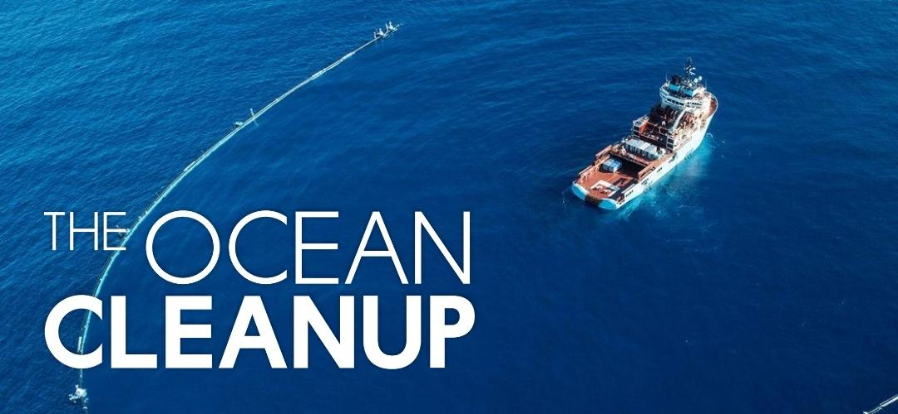
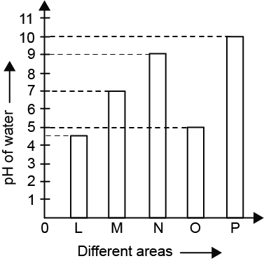

Problema
A poluição dos oceanos ameaça a vida marinha e a sustentabilidade costeira.

A poluição dos oceanos ameaça a vida marinha e a sustentabilidade costeira.
Usamos sensores Arduino e análise de dados com Python.
 Monitorar a qualidade da água e informar comunidades costeiras.
 Pescadores, ONGs ambientais e governos locais.
 Dados em tempo real e alertas sobre a qualidade da água.
Facilita a pesca sustentável e a conservação marinha.